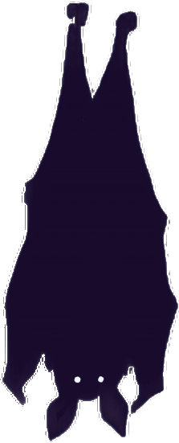

Tilgængelighed
Alle skal kunne være med
Her finder du information om adgangsforhold, faciliteter og særlige hensyn, så du kan forberede dit besøg.
Adgang til festivalområdet
Haunted Hill finder sted på Refshaleøen i København.
Festivalområdet ligger i industrielle omgivelser, hvor underlaget nogle steder kan være ujævnt. Det kan gøre fremkommeligheden vanskeligere for gæster med kørestol, rollator eller gangbesvær.
Kørestol og gangbesvær
Vi ønsker, at gæster med nedsat mobilitet skal kunne deltage i festivalen.
Nogle aktiviteter kan dog foregå i mørke eller på områder med begrænset plads. Vi anbefaler derfor, at du undersøger adgangsforholdene til den enkelte aktivitet, inden du deltager.
Ledsager
Har du behov for en ledsager under dit besøg, kan du kontakte festivalen for information om ledsageradgang og billetmuligheder.
Toiletforhold
Oplysninger om festivalens toiletter og tilgængelige toiletfaciliteter vil fremgå af den praktiske information om festivalområdet.
Lys, lyd og særlige effekter
Haunted Hill er en Halloweenfestival med mørke omgivelser, lydeffekter og overraskelser. Nogle aktiviteter kan indeholde blinkende lys, høje lyde og pludselige forskrækkelser. Er du følsom over for lys, lyd eller mange sanseindtryk, anbefaler vi, at du læser beskrivelserne af aktiviteterne på forhånd.
Har du særlige behov?
Har du spørgsmål om adgangsforhold, aktiviteter eller andre hensyn? Kontakt festivalen, inden du besøger os.
Kontakt os